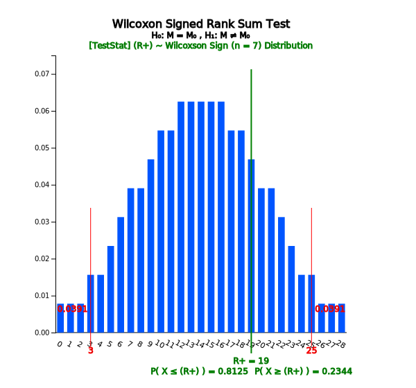

In case of the paired samples, first calculate the differences (\(d_i = x_{i1} -x_{i2}\)) for each paired sample as shown in Table 10.2.6. For the data of differences, we examine the normality to check whether the parametric test can be applicable or not. If it is not applicable, we apply the Wilcoxon signed rank sum test on the differences.
Chapter 10. Nonparametric Testing Hypothesis
10.2.2 Paired Samples: Wilcoxon Signed Rank Sum Test
[presentation] [video]
Section 8.1.2 discussed the testing hypothesis for two population means using paired samples. Paired
samples are used when it is difficult to extract samples independently from two populations, or if independently
extracted, the characteristics of each sample object are so different that the resulting analysis is meaningless.
If two populations are normally distributed, the t-test was applied for the difference data of the paired samples
as described in Section 8.1.2. However, if the normality assumption of two populations can not be satisfied, the
Wilcoxon signed rank sum test in Section 10.1.2, which is a nonparametric test, can be applied to the difference
data of the paired samples.
Table 10.2.6 Data of differences for paired samples
| Pair number | Sample of population 1 (\(x_{i1}\)) |
Sample of population 2 (\(x_{i2}\)) |
Difference (\(d_{i} = x_{i1} - x_{i2}\)) |
|---|---|---|---|
| 1 | (\(x_{11}\)) | (\(x_{12}\)) | (\(d_{1} = x_{11} - x_{12}\)) |
| 2 | (\(x_{21}\)) | (\(x_{22}\)) | (\(d_{2} = x_{21} - x_{22}\)) |
| \(\cdots\) | \(\cdots\) | \(\cdots\) | \(\cdots\) |
| n | (\(x_{n1}\)) | (\(x_{n2}\)) | (\(d_{n} = x_{n1} - x_{n2}\)) |
Let's take a look at the next example.
Example 10.2.2
The following is the survey result of eight samples from young couples. The husband’s age and wife’s age of each couple are recorded.
[(28, 28) (30, 29) (34, 31) (29, 32) (28, 29) (31, 33) (39, 35) (34, 29)
[Ex] ⇨ eBook ⇨ EX100202_AgeOfCouple.csv
1) Calculate data of differences in each pair and draw their histogram to check whether a parametric test is applicable or not.
2) Apply the Wilcoxon signed rank sum test to see whether the husband’s age is greater than the wife’s age with the significance level of 0.05.
3) Check the result of the above signed rank sum test using 『eStat』.
Answer
1) The data of age differences between husband and wife are as follows:
Table 10.2.7 Data of age differences between husband and wife
| Pair number | Husband Age (\(x_{i1}\)) |
Wife Age (\(x_{i2}\)) |
Difference (\(d_{i} = x_{i1} - x_{i2}\)) |
|---|---|---|---|
| 1 | 28 | 28 | 0 |
| 2 | 30 | 29 | 1 |
| 3 | 34 | 31 | 3 |
| 4 | 29 | 32 | -3 |
| 5 | 28 | 29 | -1 |
| 6 | 31 | 33 | -2 |
| 7 | 39 | 35 | 4 |
| 8 | 34 | 29 | 5 |
The histogram for the data of differences by using『eStat』 (the testing hypothesis for
a population mean) is as in <Figure 10.2.8>. If you look at the histogram,
it is not sufficient evidence that the data of differences follow a normal distribution,
because the number of data is small. In such a case, applying the parametric hypothesis test
may lead to errors. An appropriate nonparametric method for this problem is the Wilcoxon
signed rank sum test on the data of differences.

<Figure 10.2.8> Histogram of age difference
|
2) The hypothesis to test is that the population median of the husband’s age (\(\small M_1\)) is the same
as the population median of the wife’s age (\(\small M_2\)) or not as follows:
\(\quad \small \quad H_0 : M_1 = M_2, \quad \quad H_1 : M_1 \ne M_2 \)
Since it is a paired sample, the hypothesis can be written whether the population median of differences (\(\small M_d = M_1 - M_2\)) is equal to 0 or not as follows:
\(\quad \small \quad H_0 : M_d = 0, \quad \quad H_1 : M_d \ne 0 \)
In order to apply the signed rank sum test on the data of differences, we count the number of
differences which is greater than 0 (denote as + sign) or not (denote as – sign) and assign ranks
on |difference – 0|. Then calculate the sum of ranks with + sign and the sum of ranks with – sign.
If the difference data is 0, omit the data. If there are ties on the difference data, assign
the average rank.
| Difference data | 1 | 3 | -3 | -1 | -2 | 4 | 5 |
| Sign data | + | + | - | - | - | + | + |
| | data – 0 | | 1 | 3 | 3 | 1 | 2 | 4 | 5 |
| Rank of | data – 0 | | 1.5 | 4.5 | 4.5 | 1.5 | 3 | 6 | 7 |
| Rank sum of ‘+’ sign () | \(R_{+}\) = 1.5 + 4.5 + 6 + 7 = 19 | ||||||
In『eStatU』, the distribution of the Wilcoxon signed rank sum when is shown in <Figure 10.2.9>
and Table 10.2.8.
Table 10.2.8 Wilcoxon signed rank sum distribution when \(n = 7\)
| Wilcoxon Signed Rank Sum Distribution | \(n\) = 7 | ||
|---|---|---|---|
| \(x\) | \(P(X = x)\) | \(P(X \le x)\) | \(P(X \ge x)\) |
| 0 | 0.0078 | 0.0078 | 1.0000 |
| 1 | 0.0078 | 0.0156 | 0.9922 |
| 2 | 0.0078 | 0.0234 | 0.9844 |
| 3 | 0.0156 | 0.0391 | 0.9766 |
| \(\cdots\) | \(\cdots\) | \(\cdots\) | \(\cdots\) |
| 25 | 0.0156 | 0.9766 | 0.0391 |
| 26 | 0.0078 | 0.9844 | 0.0234 |
| 27 | 0.0078 | 0.9922 | 0.0156 |
| 28 | 0.0078 | 1.0000 | 0.0078 |
Since it is a two-sided test with the significance level of 5%, if a 2.5 percentile is found
at both ends, \(\small P(X \le 2) = 0.0234, P(X \ge 26) = 0.0234 \). Since it is a discrete distribution,
there is no exact value of the 2.5 percentile. Therefore, the decision rule is as follows:
\(\quad \)If \(\small R_+ \le 2.5 \) or \(R_+ \ge 25.5\), reject \(\small H_0\)
Since \(\small R_+ \) = 19 in this problem, we can not reject the null hypothesis \(\small H_0\) and conclude that the husband’s age and the wife’s age are the same.
3) Enter the data as shown in <Figure 10.2.9> in『eStat』and click the icon which is
the test for a population mean. If you select the variable ‘Difference’ as the analysis
variable, a dot graph with the 95% confidence interval for the population mean difference will
appear.
If you enter 0 for testing value in the hypothesis option and click the [Execute] button,
you will see the test result as in<Figure 10.2.10> and <Figure 10.2.11>.
Two critical lines for values containing 2.5 percentile from both sides are shown here.
For a discrete distribution, the choice of the final decision rule should be determined by the analyst.

<Figure 10.2.9> Data difference
|

<Figure 10.2.10> 『eStat』Signed rank sum test

<Figure 10.2.11> Result of Wilcoxon signed rank sum test
The Wilcoxon signed rank test for the paired samples is to test whether the population median of the
differences between two populations, \(M_d\), is zero or not. If we denote the paired samples as
\((x_1 , y_1 ), (x_2 , y_2 ) , ... , (x_n , y_n )\), the Wilcoxon signed rank sum test calculate
the difference \(d_i = x_i - y_i\) first and assign ranks on \(|d_i|\). The sum of ranks of \(|d_i|\)
which has + sign of \(d_i\), \(R_+\), is used as the test statistic. 『eStatU』 provides the distribution
of \(R_+\), denoted as \(w_{+}(n)\), up to \(n\) = 22. \(w_{+}(n)_{α}\) refers to the
right-hand 100 \(\times α\) percentile of this distribution which may not have an accurate
percentile value, because it is a discrete distribution. In this case the average of two values near
\(w_{+}(n)_{α}\) is used approximately. Table 10.2.9 summarizes the decision rule of the
Wilcoxon signed rank sum test for paired samples by the type of hypothesis.
Table 10.2.9 Wilcoxon signed rank sum test for paired samples
| Type of Hypothesis | Decision Rule Test Statistic \(R_{+}\)= 'Sum of ranks on \(|d_{i} |\) with + sign |
|---|---|
| 1) \( \; H_0 : M_d = 0 \) \(\quad\,\, H_1 : M_d > 0 \) |
If \( R_{+} > w_{+}(n)_{α} \), then reject \( H_0 \) |
| 2) \( \; H_0 : M_d = 0 \) \(\quad\,\, H_1 : M_d < 0 \) |
If \( R_{+} < w_{+}(n)_{1-α} \), then reject \( H_0 \) |
| 3) \( \; H_0 : M_d = 0 \) \(\quad\,\, H_1 : M_d \ne 0 \) |
If \( R_{+} < w_{+}(n)_{1-α/2} \quad or\quad R_{+} > w_{+}(n)_{α/2} \), then reject \( H_0 \) |
☞ If there is 0 on the differences of paired samples?
If there is 0 on the differences of paired samples, the data is omitted for further analysis. That is, \(n\) is decreased.
|
Practice 10.2.2
An oil company has developed a gasoline additive that will improve the fuel mileage of gasoline.
We used 8 pairs of cars to compare the fuel mileage to see if it is actually improved.
Each pair of cars has the same details as its structure, model, engine size, and other relationship
characteristics. When driving the test course using gasoline, one of the pair selected randomly
and added additives, the other of the pair was driving the same course using gasoline without additives.
The following table shows the km per liter for each of pairs.
|
If the sample size of the paired sample is large, use the normal distribution approximation formula shown in Table 10.1.6.
Multiple Choice Exercise
*** Choose one answer and click [Submit] button
10.6 Which of the following nonparametric tests is for testing the location parameters of two populations?
10.7 What is the test statistic used for testing two location parameters of two populations using a nonparametric test?